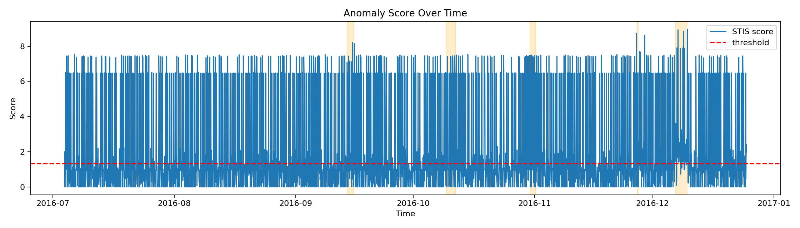
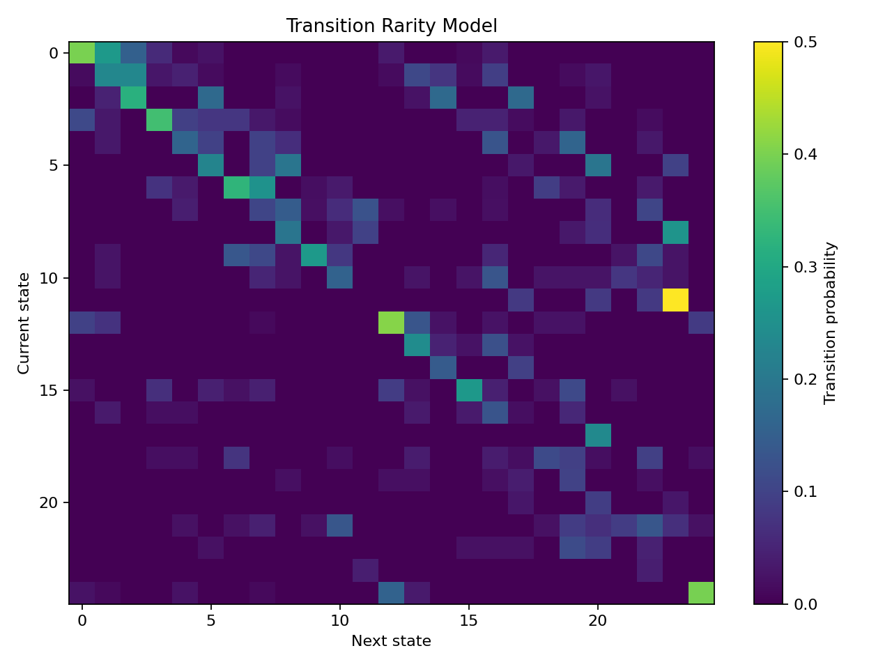
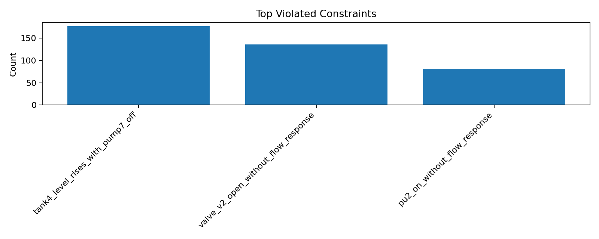

Industrial Control Systems Research
STIS
State Transition Integrity Scoring for interpretable ICS anomaly detection.
STIS detects anomalies by scoring transitions between system states, combining sensor deviation, transition rarity, and rule-based control consistency into a single interpretable alert score.
Scoring Equation
STIS(t) = alpha * ValueDeviation(t)
+ beta * TransitionRarity(t)
+ gamma * ConstraintViolationScore(t)Final public BATADAL default: tuned to emphasize value deviation and transition rarity with zero-delay attack detection.
Why It Matters
Transitions are often where ICS attacks reveal themselves.
Value deviation
Flags continuous sensor behavior that departs from learned normal operating patterns.
Transition rarity
Uses a Markov-style state model to catch unlikely control and process transitions.
Constraint violations
Encodes interpretable process rules such as missing flow response or unexpected tank behavior.
Benchmark Snapshot
Public BATADAL benchmark included in the repository.
| Model | F1 | Recall | Detection Delay |
|---|---|---|---|
| Windowed Autoencoder | 0.9050 | 0.8265 | 0.0 |
| LOF | 0.8504 | 0.7397 | 0.0 |
| One-Class SVM | 0.7731 | 0.6301 | 0.0 |
| STIS | 0.7627 | 0.6164 | 0.0 |
| Isolation Forest | 0.4792 | 0.3151 | 2.0 |
BATADAL dataset04 contains labeled attack rows and unlabeled rows. This benchmark compares models on the labeled attack subset currently supported in the repo.
Visuals
Generated directly from the repository outputs.



Get Started
Clone the repo and run the benchmark locally.
python3 -m venv .venv
source .venv/bin/activate
pip install -r requirements.txt
python scripts/train_stis.py \
--dataset-config configs/datasets/batadal.yaml \
--constraints-config configs/constraints/batadal_rules.yaml \
--output-dir results/batadal_final